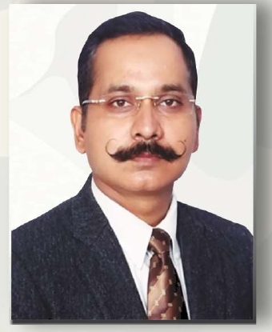

सैनिक, वह वीर योद्धा है जो देश की सीमाओं पर खड़ा हुआ है, जो मातृभूमि की रक्षा के लिए अपने लहू का आख़िरी क़तरा भी इस मिट्टी की समर्पित कर देता है। हम केवल अपने बारे में सोचते हैं, पर सैनिक पूरे देश के बारे में सोचता है। वह वहाँ है क्योंकि उसको देश के लिए कुछ करना है, जो बात उसको हमसे अलग करती है।
एक सैनिक का बलिदान बहुत बड़ा होता है, और उससे भी बड़ा बलिदान उसके परिवार का होता है। हमारा भी कर्तव्य बनता है कि हम उनके परिवार के बारे में कुछ सोचें। उस सैनिक की कमी को तो हम पूरा नहीं कर सकते, पर उसके परिवार को मानसिक और आर्थिक रूप से सहारा तो दे ही सकते हैं। भारतीय सैनिक अपना सर्वोत्तम बलिदान देने से एक पल भी नहीं कतराते — अपने परिवार से किया हर वादा भूल जाते हैं और अपनी मिट्टी से किया अपना वादा निभा जाते हैं। ऐसे वीर सैनिकों को नमन।
जय हिंद... भारत माता की जय... वंदे मातरम्
"भारतीय सैनिक सहायता परिषद" का मुख्य उद्देश्य भारतीय सशस्त्र बलों के सैनिकों के परिवारों के लिए योगदान करना है।
वीरगति प्राप्त सैनिकों के बच्चों के लिए शिक्षा और प्रशिक्षण के साथ-साथ, बच्चे की पूरी क्षमता को बाहर लाना, जीवन और उसकी विविध स्थितियों के लिए उसे तैयार करना, ताकि वह समाज की सेवा में समर्पित एक सुसंस्कृत और ज़िम्मेदार नागरिक बने।
स्थानीय ज़िला प्रशासन संबंधी पूर्व सैनिकों / उनके आश्रितों की समस्याओं में सहायता करना।
वीरगति प्राप्त सैनिकों के परिवारों को कानूनी सहायता के अलावा वित्तीय और भावनात्मक परामर्श प्रदान कराना है।
वीर जवानों ने अपनी शहादत देकर तिरंगे की शान को बढ़ाया है। इसलिए शहीद के नाम का स्मारक उसके पैतृक स्थान पर बनवाना, जिससे आने वाली पीढ़ियों को भी शहीदों की कुर्बानियों से परिचित कराया जा सके।
भारत द्वारा अपनी सम्प्रभुता की रक्षा के लिए लड़े गए युद्धों के बारे में जागरूकता फैलाने के लिए विभिन्न आयोजन करना।
पूर्व सैनिकों / उनके आश्रितों को भारत / प्रदेश सरकार द्वारा निर्मित लाभों से अवगत कराना तथा इन लाभों को प्राप्त करने में सहायता कराना।
बुनियादी चिकित्सा सुविधा, स्वच्छता, सामान्य स्वास्थ्य देखभाल और अन्य आवश्यक सहायता प्रदान करना जो किसी भी प्राकृतिक और मानव निर्मित आपदा की पीड़ा को दूर करने और पुनर्वास के लिए उन्हें सुविधाजनक बनाने के लिए सहायक हो सकता है।
सेनाओं में भर्ती हेतु छात्रों / छात्राओं का मार्गदर्शन करना।
पूर्व सैनिकों / सैनिक विधवाओं के पेंशन संबंधी समस्याओं का निदान करना।
भारतीय सैनिकों में कार्यकुशलता की कोई कमी नहीं है। वे सीमा सुरक्षा में ही नहीं बल्कि प्राकृतिक आपदाओं में भी देश की सुरक्षा में बेहद मददगार होते हैं। आतंकियों से लड़ना, बाढ़ में राहत कार्य, पुल टूटने पर बचाव कार्य, चुनाव में सुरक्षा व्यवस्था — सैनिक हर कर्तव्य का बख़ूबी निर्वहन करता है।
गर्मी, बरसात व ठंड के मौसम में खुले आसमान तले रहते हुए सीमा पर डटे रहते हैं और ज़रूरत पड़ने पर जान की बाज़ी लगा देते हैं। सैनिकों के हौसले से ही देश की सीमाएँ सुरक्षित हैं और करोड़ों लोग खुली हवा में साँस ले रहे हैं।
एक सैनिक अपने परिवार से दूर रहकर तन्मयता से अपना कर्तव्य निभाता है, तभी हम अपने परिवार के साथ खुशियाँ बाँट पाते हैं। मातृभूमि की रक्षा के लिए अपने लहू का आख़िरी क़तरा भी इस मिट्टी को समर्पित कर देता है।
ज़िला सैनिक कल्याण से जुड़े सेवानिवृत्त अधिकारियों व नागरिकों द्वारा परिषद की स्थापना।
शहीद सैनिकों की वीरांगनाओं व माताओं के सम्मान का पहला आयोजन।
वीरगति प्राप्त सैनिकों के बच्चों के लिए किताबें व ट्यूशन सहायता कार्यक्रम आरंभ।
कानपुर मंडल के कई ज़िलों में सक्रिय रूप से सैनिक परिवारों के साथ खड़े हैं।
चाहे आर्थिक योगदान हो या स्वयंसेवा — हर सहायता किसी सैनिक परिवार के लिए मायने रखती है।